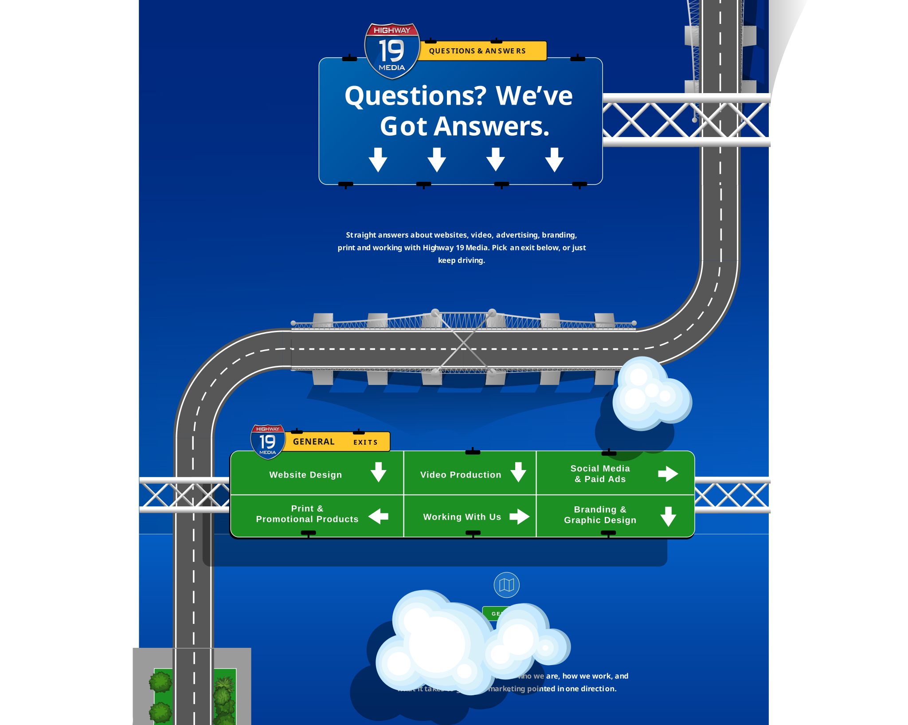
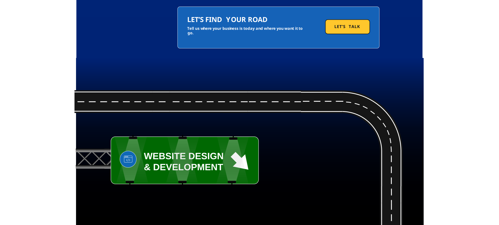
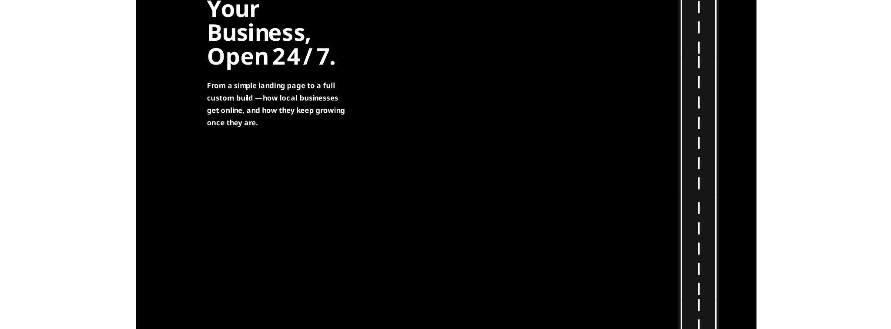
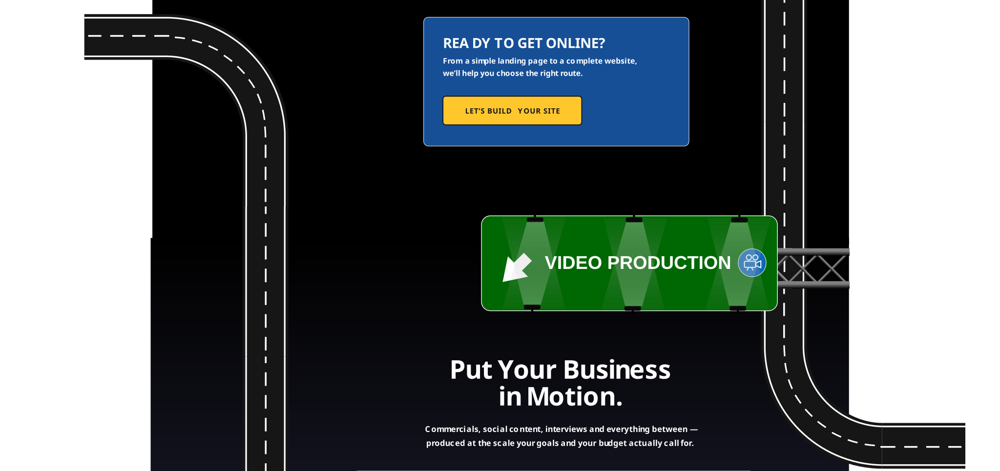
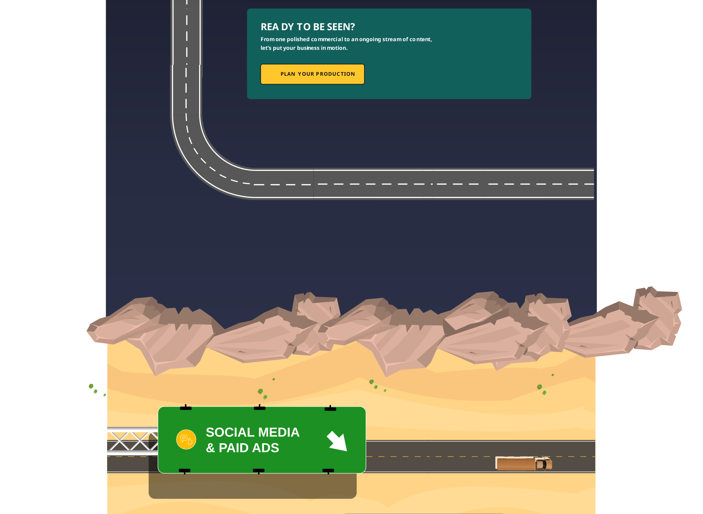
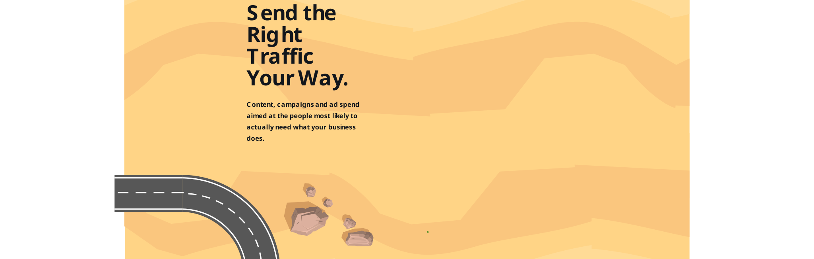
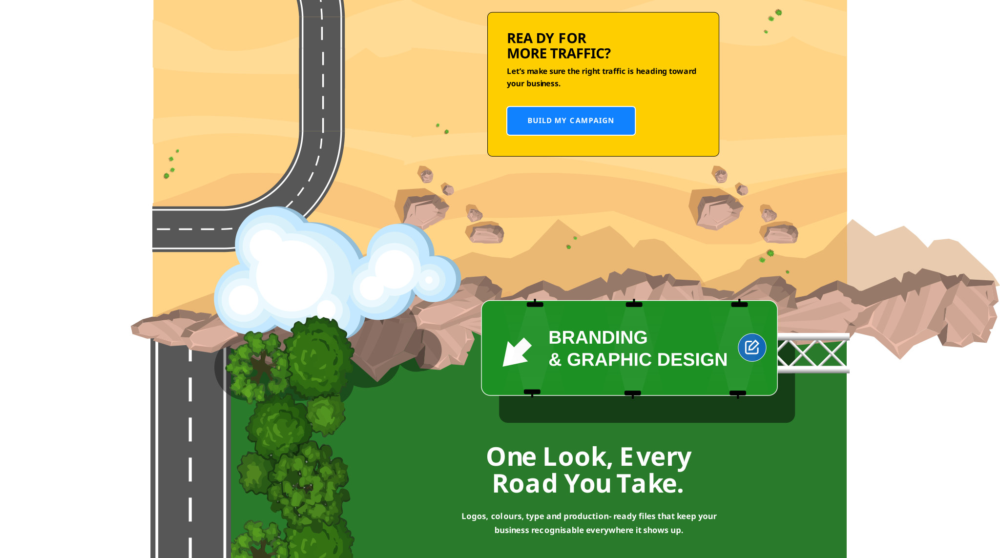
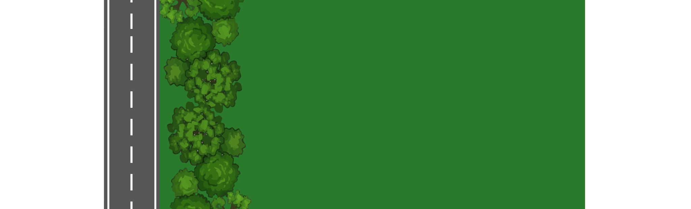
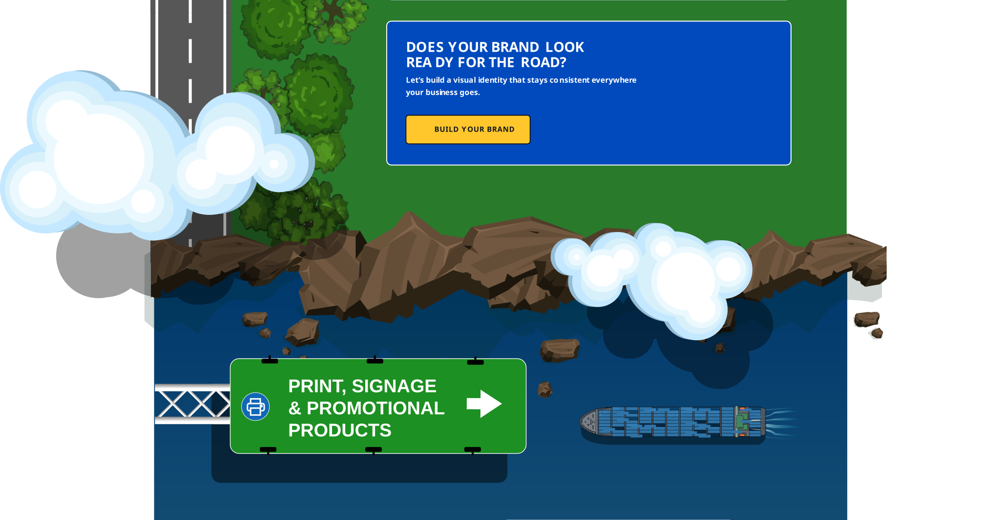
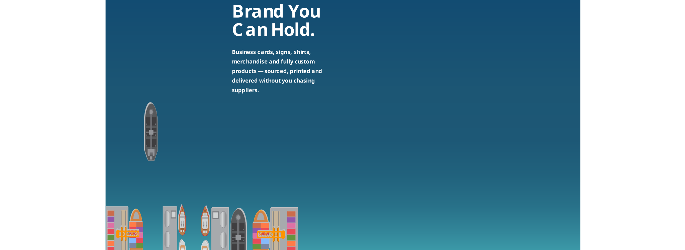

Start Here.

Website Design Video Production Social Media & Paid Ads Print & Promotional Products Working With Us Branding & Graphic Design-
Highway 19 Media helps local Tampa Bay businesses with websites, video production, social media, paid advertising, graphic design, branding, print and promotional products. Instead of coordinating multiple vendors, you have one local point of contact who can manage as much or as little as you need while keeping your marketing moving in the same direction.
-
Yes. Highway 19 Media is based in Spring Hill and serves businesses throughout Tampa Bay and surrounding areas. We can meet face-to-face, visit your business, grab a coffee or meet by video. You work with a local contact who gets to know your business and stays involved throughout the work.
-
We sit somewhere in the middle. We’re small enough that you don’t get passed from desk to desk, but we bring more than 25 years of experience across graphic design, websites, video production, print, advertising, 3D, motion graphics, vector artwork, product sourcing and more. When your business reaches a new intersection, you don’t necessarily need to find another vendor.
-
You don’t need to come to us with the whole route already mapped out. Show us what you currently have, including your website, Facebook page, logo, advertising, photos or videos. Tell us where you want the business to go and we’ll help identify what makes sense to work on next.
-
Yes. There are many different roads to the same destination. Tell us the budget you’re comfortable with and we’ll explain what we can realistically accomplish with it. More budget opens additional options. A smaller budget means we prioritize what matters most first. The goal is to use what you have wisely and keep moving forward.
-
No. We can work together on an individual project, or you can choose an ongoing 3-month, 6-month or 12-month commitment. Longer relationships allow us to develop assets, understand your customers, maintain a consistent brand, track results and continuously refine the strategy. The commitment goes both ways.
Your Business, Open 24/7.

Let’s Talk
-
Not necessarily a full website. Some local businesses simply need a professional place online where customers can see what they do, contact them and find their social media. That’s why we offer a Highway 19 Media landing-page option starting at $699. It gives your business an affordable entrance ramp to getting online.
-
A professionally designed landing page, typically three to four sections, customized around your business. It can include your services, contact information, social links, images, calls to action and a contact form.
-
If you’re planning to grow, compete heavily in search, advertise extensively, track visitors, display a larger portfolio or catalog, sell products online or continually expand your content, your own website gives you considerably more room to grow.
-
Full website services generally start around $2,000 for a smaller service or portfolio website. That can include multiple pages, infrastructure setup, strategy, custom design, user experience and SEO/AEO foundations. E-commerce and highly customized websites cost more depending on functionality and complexity.
-
We work with WordPress, Webflow, Shopify, Magento and other major website platforms. We can build custom, template-based and AI-assisted websites and connect them with CRMs and other business systems. The platform is the vehicle. We choose the one that makes sense for where your business is going.
-
A landing page can generally be completed in about a week. A complete website may take several weeks to a month depending on complexity, content and client response time. Straightforward websites can sometimes be completed in around two weeks when there are no roadblocks.
-
Sometimes very little. If we’re starting from scratch, we can develop virtually everything. If you already have logos, photographs, videos, copy, brand files or an existing website, send them over so we can build on what you already have.
Put Your Business in Motion.

Let’s Build Your Site-
Everything from quick social content to professional commercial productions. We produce website hero videos, commercials, interviews, podcasts, testimonials, social media content, drone footage, educational videos and ongoing content series.
-
Not always. If you’re producing one commercial that needs to represent your company for the next year, investing in professional production makes sense. If you need fresh social content every week, a lighter and more efficient production setup may be the smarter road.
-
We help develop the concept and script, plan the production and prepare you before filming. On production day we bring the appropriate cameras, microphones and equipment and direct you while filming. Then we edit the footage, incorporate B-roll and can add graphics, motion design, music and branded endings.
-
Yes. We can visit your business, capture what you do, ask questions, record tips and turn that material into multiple pieces of social content. Instead of one big splash followed by silence, we help keep your business visible.
-
Yes. When appropriate, we can use a studio environment for interviews, podcasts and other controlled productions. Longer conversations can also be edited into multiple shorter pieces for social media.
Send the Right Traffic Your Way.

Plan Your Production
-
Yes. We can create content, design posts, produce videos, organize messaging and manage ongoing social media activity. You can stay heavily involved or let us handle more of the work.
-
Yes. We can manage PPC and paid social campaigns whether you already have advertising materials or need us to build the campaign from scratch.
-
Audience first. Advertising to the wrong people is like knocking on doors where nobody needs what you’re selling. Next we examine the offer and then your existing traffic, tracking, previous campaigns and customer data. From there we build a strategy specifically around your business.
-
Often, yes. For a business without much existing audience data, an awareness strategy can help us learn who responds, build audiences and gather information that can later support more targeted campaigns and retargeting.
-
You can often begin seeing movement relatively quickly through traffic, engagement, inquiries and other signals. Sustainable marketing usually builds over time. Several months of consistent marketing gives us considerably more information and opportunity to refine the strategy than a short burst.
-
No. Ad spend and our management and creative fees are separate. Your ad spend is paid to the advertising platforms. Our fee covers the strategy, management, creative work and other services we provide.
-
We’ll first look at what you already have. If you have good content and a strong offer, $500 may work as ad spend for a targeted campaign. If you have no content, weak branding or nowhere effective to send customers, it may make more sense to invest in building those assets first.
One Look, Every Road You Take.

Build My Campaign
-
Yes. Branding can include your logo, colors, typography, visual language and professional vector files needed to reproduce your identity consistently across websites, video, social media, print, signs and advertising.
-
Absolutely. You can hire us for individual graphic design projects, hourly work or an ongoing graphic-design retainer. This can include social posts, ads, flyers, digital graphics, signage, marketing materials and other creative work.
-
Consistency. When the same creative direction runs through your website, advertising, video, print and social media, everything looks like one business rather than pieces created by unrelated vendors. One contact knows the roadmap and coordinates the work.
Brand You Can Hold.

Build Your Brand
-
Business cards, flyers, catalogs, posters, signs, letterheads, shirts, mugs, pens, mouse pads, notebooks, promotional products, vehicle graphics and many other branded materials.
-
Yes. We can research vendors, compare pricing, prepare the artwork and manage production. You don’t have to spend your day calling printers and suppliers.
-
Yes. We have experience with international sourcing and can work directly with manufacturers, including manufacturers in China. This opens the door to completely custom promotional products, branded merchandise, custom plush products, packaging and products beyond standard promotional catalogs.
What It’s Actually Like.
-
You’ll have one primary local contact who gets to know your business, coordinates your projects, schedules production and helps manage the different services you use. You shouldn’t have to explain your business from scratch every time you need something.
-
As much or as little as you want. Some business owners want to make every turn with us. Others tell us where they want to go and let us handle the road ahead. Both approaches work.
-
When we build on your own domain, once the project and applicable warranty period are complete, control of the website is returned to you, subject to the project agreement and any third-party licensing. Raw photography and video assets are handled differently and are generally licensed according to the individual project agreement.
-
Show us where you are and tell us where you want to go. Send us your current website, Facebook page, logo, marketing materials, advertising or anything else you’re using. Then we can meet by video, face-to-face or even over coffee and talk about your business, goals and budget.
The first conversation is about getting to know your business.
The meeting is where we start mapping the road ahead.